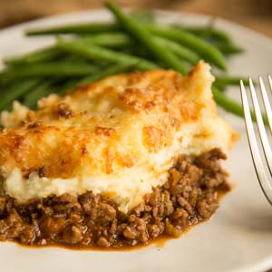
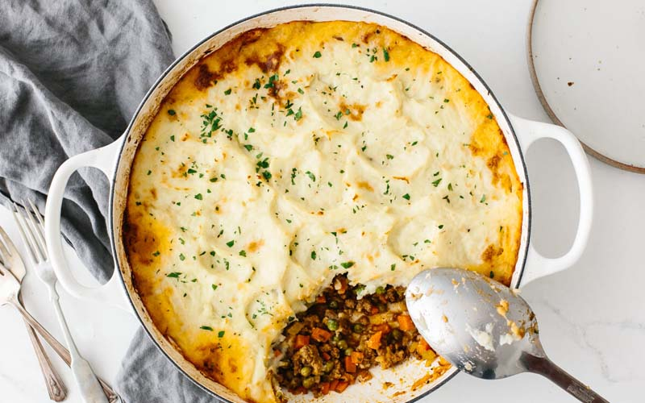

International Dishes Recipe 9:
Shepherd's Pie
- Dish Description:
- Shepherd's pie, cottage pie, or hachis Parmentier is a ground meat pie with a crust or topping of mashed potato; It is most likely of English origin. The dish has many variants, but the defining ingredients are ground red meat cooked in a gravy or sauce with onions, and a topping of mashed potato. Sometimes other vegetables are added to the filling, such as peas, sweetcorn, celery or carrots. It is sometimes also gratineed with grated cheese.

Ingredients:
- 1 1/2 lb. potatoes, peeled
- Kosher salt
- 4 tbsp. melted butter
- 1/4 c. milk
- 1/4 c. sour cream
- Freshly ground black pepper
- 1 tbsp. extra-virgin olive oil
- 1 large onion, chopped
- 2 carrots, peeled and chopped
- 2 cloves garlic, minced
- 1 tsp. fresh thyme
- 1 1/2 lb. ground beef
- 1 c. frozen peas
- 1 c. frozen corn
- 2 tbsp. all-purpose flour
- 2/3 c. low-sodium chicken broth
- 1 tbsp. freshly chopped parsley, for garnish
Directions:
- Preheat oven to 400°. Make mashed potatoes: In a large pot, cover potatoes with water and add a generous pinch of salt.
- Bring to a boil and cook until totally soft, 16 to 18 minutes. Drain and return to pot.
- Use a potato masher to mash potatoes until smooth. Add melted butter, milk, and sour cream.
- Mash together until fully incorporated, then season with salt and pepper. Set aside.
- Make beef mixture: In a large, ovenproof skillet over medium heat, heat oil.
- Add onion, carrots, garlic, and thyme and cook until fragrant and softened, 5 minutes.
- Add ground beef and cook until no longer pink, 5 minutes more. Drain fat.
- Stir in frozen peas and corn and cook until warmed through, 3 minutes more. Season with salt and pepper.
- Sprinkle meat with flour and stir to evenly distribute. Cook 1 minute more and add chicken broth. Bring to a simmer and let mixture thicken slightly, 5 minutes.
- Top beef mixture with an even layer of mashed potatoes and bake until there is very little liquid visible and mashed potatoes are golden, about 20 minutes. Broil if desired.
- Garnish with parsley before serving.